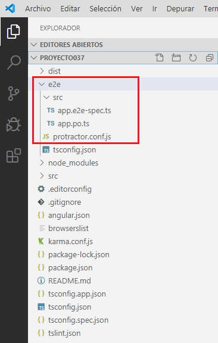

A partir de la versión 12 de Angular no se crea la carpeta e2e.
Los desarrolladores de Angular proponen que cada uno elija que herramientas de prueba e2e utilizar en cada proyecto en particular, algunos de los mismos son: Cypress, WebdriverIO y TestCafe (se deben instalar luego de crear el proyecto Angular)
El nombre e2e viene de 'end to end', en castellano 'de punta a punta'.
Las pruebas de punta a punta o pruebas de integración son la forma de asegurarnos que nuestra aplicación funciona correctamente en todo su conjunto.
Hay que tener en cuenta que las pruebas e2e son distintas a las pruebas unitarias que se implementan a cada componente (las pruebas unitarias deben probar un pequeño fragmento de código aislado), las pruebas e2e buscan verificar que las componentes en conjunto interactúan correctamente.
Las pruebas de integración en Angular funcionan con la librería Protractor
Protractor ejecuta pruebas e2e contra su aplicación dentro de un navegador real, interactuando con ella como lo haría un usuario real.
En este concepto estamos viendo el objetivo de las carpetas de Angular y no aprenderemos como codificar las pruebas e2e.
protractor.conf.js Contiene la configuración de la aplicación Protractor.
src/app.e2e-spec.ts
src/app.po.ts